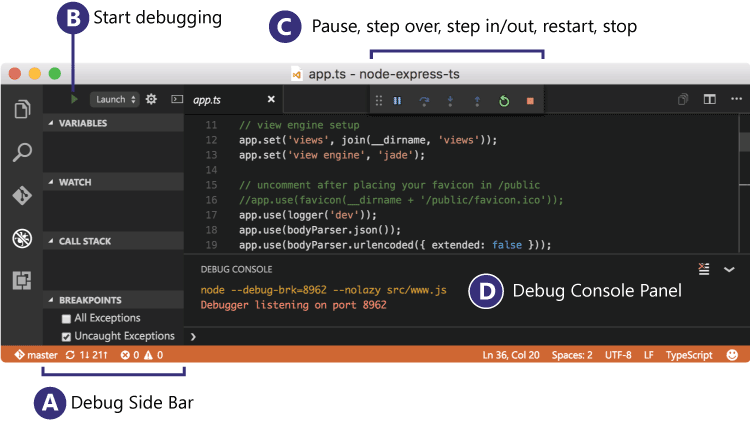
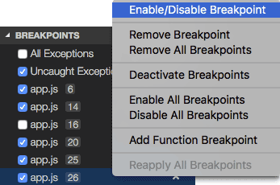
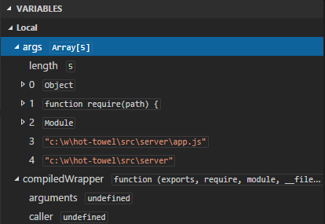
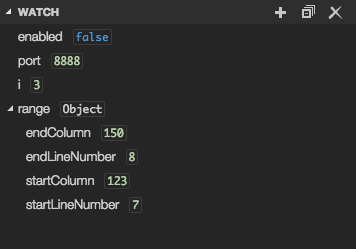
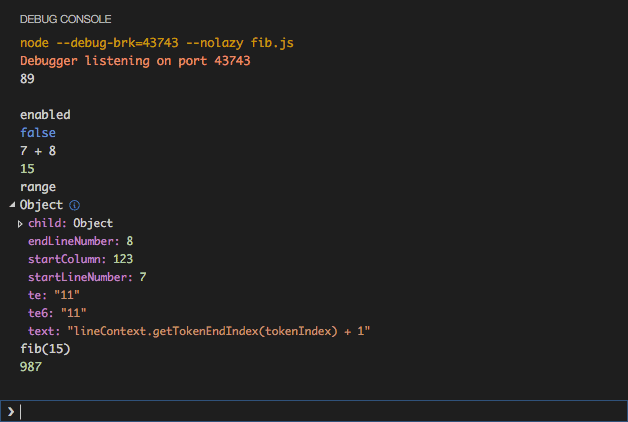
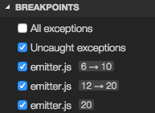
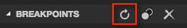
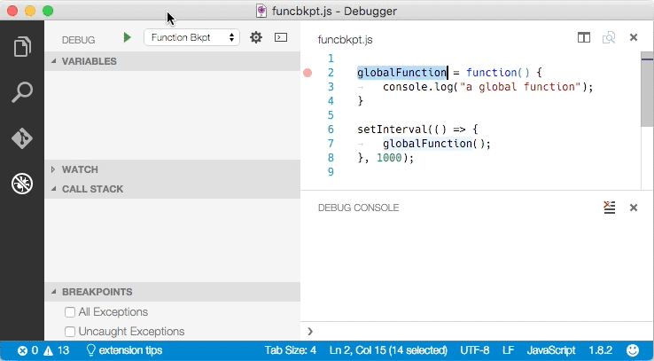

调试
Debugging
Visual Studio Code的一个很重要的特性是他很棒的调试支持。VS Code的内置调试器帮助加速你的编辑，编译和调试循环。
One of the key features of Visual Studio Code is its great debugging support. VS Code's built-in debugger helps accelerate your edit, compile and debug loop.

调试扩展
Debugger Extensions
VS Code内置一个支持Node.js运行时的调试，可以调试JavaScript，TypeScript和其他可以编译到JavaScript的语言。
VS Code has built-in debugging support for the Node.js runtime and can debug JavaScript, TypeScript, and any other language that gets transpiled to JavaScript.
为了调试其他语言和运行时（包括 PHP, Ruby, Go, C#, Python 和其他），请到我们的 VS Code 市场寻找调试器 插件。
For debugging other languages and runtimes (including PHP, Ruby, Go, C#, Python and many others), please look for Debuggers extensions in our VS Code Marketplace.
下面是一些流行的包含调试支持的插件：
Below are several popular extension which include debugging support:
提示： 上边展示的插件是动态查询的。单击插件的标题来阅读他们的描述，决定哪个插件最适合你。
Tip: The extensions shown above are dynamically queried. Click on an extension tile above to read the description and reviews to decide which extension is best for you.
开始调试
Start Debugging
下面的文档基于内置的Node.js调试器，但是很多的的概念和特性也能应用到其他调试器中。
The following documentation is based on the built-in Node.js debugger, but most of the concepts and features are applicable to other debuggers as well.
在阅读关于调试的部分前创建一个简单的Node.js应用是很有帮助的。你可以跟随Node.js walkthrough来安装Node.js和创建一个简单的"Hello World"JavaScript应用(app.js)。一旦你搭建完成一个简单的一个应用，这一节将给你介绍VS Code调试的方方面面。
It is helpful to first create a sample Node.js application before reading about debugging. You can follow the Node.js walkthrough to install Node.js and create a simple "Hello World" JavaScript application (app.js). Once you have a simple application all set up, this page will take you through VS Code debugging features.
调试视图
Debug View
为了把调试视图放在最前，单击VS Code侧边的视图栏中的调试图标。
To bring up the Debug view, click on the Debugging icon in the View Bar on the side of VS Code.
调试视图将会显示所有和调试器有关的信息，并且在最上方显示一个带有调试命令和配置的面板。
The Debug view displays all information related to debugging and has a top bar with debugging commands and configuration settings.
运行配置
Launch Configurations
为了在VS Code中调试你的应用，你首先需要创建你的运行配置文件 - launch.json。单击最上方面板调试视图中的齿轮图标，选择你的调试环境，然后VS Code将在你的工作空间的 .vscode目录下生成一个launch.json文件。
To debug your app in VS Code, you'll first need to set up your launch configuration file - launch.json. Click on the Configure gear icon on the Debug view top bar, choose your debug environment and VS Code will generate a launch.json file under your workspace's .vscode folder.
这里是一个生成的Node.js调试器：
Here is the one generated for Node.js debugging:
{
"version": "0.2.0",
"configurations": [
{
"name": "Launch",
"type": "node",
"request": "launch",
"program": "${workspaceRoot}/app.js",
"stopOnEntry": false,
"args": [],
"cwd": "${workspaceRoot}",
"preLaunchTask": null,
"runtimeExecutable": null,
"runtimeArgs": [
"--nolazy"
],
"env": {
"NODE_ENV": "development"
},
"externalConsole": false,
"sourceMaps": false,
"outDir": null
},
{
"name": "Attach",
"type": "node",
"request": "attach",
"port": 5858,
"address": "localhost",
"restart": false,
"sourceMaps": false,
"outDir": null,
"localRoot": "${workspaceRoot}",
"remoteRoot": null
}
]
}
请注意这些运行设置中的属性对于不同的调试器不同。你可以使用智能感知来找出对于一个调试器哪些属性是存在的。另外，鼠标悬停帮助对所有属性都有效。如果在你的运行配置文件中看到绿色波浪线，鼠标悬停在上面来问题是什么和尝试在运行一个调试会话前修复。
Please note that the attributes available in these launch configurations vary from debugger to debugger. You can use IntelliSense to find out which attributes exist for a specific debugger. In addition, hover help is available for all attributes. If you see green squigglies in your launch configuration, hover over them to learn what the problem is and try to fix them before launching a debug session.
在VS Code中我们支持用调试模式启动你的应用，或者连接到一个已经运行的应用。取决于不同的要求(attach或者launchh)，需要不同的属性。我们的launch.json确认和建议应该对它有帮助。
In VS Code, we support launching your app in debug mode or attaching to an already running app. Depending on the request (attach or launch) different attributes are required and our launch.json validation and suggestions should help with that.
查看生成的值，并且确认它们对你的项目和调试环境有效。你可以添加额外的配置到launch.json 中(使用悬停和智能感知来帮助你)。
Review the generated values and make sure that they make sense for your project and debugging environment. You can add additional configurations to the launch.json (use hover and IntelliSense to help).
在调试视图中选择名为 Launch的配置使用 Configuration dropdown。一旦你完成运行配置的创建，使用kb(workbench.action.debug.start)开始你的调试会话。
Select the configuration named Launch using the Configuration dropdown in the Debug view. Once you have your launch configuration set, start your debug session with kb(workbench.action.debug.start).
为了在开始一个调试会话前运行一个任务，设置preLaunchTask为tasks.json()中指定的任务。
To launch a task before the start of each debug session, set the preLaunchTask to the name of one of the tasks specified in tasks.json (located under the workspace's .vscode folder).
VS Code支持和配置tasks.json相同字符串中的的变量替换。
VS Code supports variable substitution inside strings in launch.json the same way as for tasks.json.
运行模式
Run mode
除了调试一个程序，VS Code支持运行一个程序。运行动作被 `kb(workbench.action.debug.run)触发，并且使用当前选中的运行配置。'运行'模式支持很多运行配置属性。当程序正在运行时VS Code维护一个调试会话，按下停止按钮来终止这个程序。
In addition to debugging a program, VS Code supports running the program. The Run action is triggered with kb(workbench.action.debug.run) and uses the currently selected launch configuration. Many of the launch configuration attributes are supported in 'Run' mode. VS Code maintains a debug session while the program is running and pressing the Stop button terminates the program.
请注意:运行动作一直可用，但是调试扩展需要“选择进入”来支持"运行"。如果一个调试扩展没有被更新，"运行"将会退化到"调试"(内置的Node.js调试器和Mono 调试器已经支持"运行"了)
Please note: The Run action is always available, but a debugger extension has to 'opt-in' in order to support 'Run'. If a debugger extension has not been updated, 'Run' will fall back to 'Debug' (the built-in Node.js Debug and Mono Debug already support 'Run').
断点
Breakpoints
点击编辑器边距可以设置或取消断点。更好的断点控制(启用/禁用/重新启用)可以在调试视图中的断点区域设置。
Breakpoints can be toggled by clicking on the editor margin. Finer breakpoint control (enable/disable/reapply) can be done in the Debug view's BREAKPOINTS section.
- 编辑器边距中的断点一般用红色的实心圆表示。
- 禁用的断点有一个涂成灰色的圆。
当一个调试会话开始后，不能注册到调试器的断点变为灰色突起的圆。
Breakpoints in the editor margin are normally shown as red filled circles.
- Disabled breakpoints have a filled gray circle.
- When a debugging sessions starts, breakpoints that cannot be registered with the debugger change to a gray hollow circle.

``命令再次设置所以断点到它们最初的位置。如果你的调试环境是"lazy"这很有用，并且源码中"错位"的断点 还没有被执行的。（更多的细节参考下面的Node调试：断点）
The Reapply All Breakpoints command sets all breakpoints again to their original location. This is helpful if your debug environment is "lazy" and "misplaces" breakpoints in source code that has not yet been executed. (For details see below under Node Debugging: Breakpoint Validation)
数据注入
Data inspection
可以注入变量到调试视图的变量区域，或者通过悬停在编辑器中的源码上。变量和表达式计算是相对于调用栈中选中的栈帧的。
Variables can be inspected in the VARIABLES section of the Debug view or by hovering over their source in the editor. Variables and expression evaluation is relative to the selected stack frame in the CALL STACK section.

变量和表达式可以在调试视图的观察区域中被计算和监控。
Variables and expressions can also be evaluated and watched in the Debug view WATCH section.

调试控制台
Debug Console
可以在调试控制台中计算表达式。要打开调试控制台，使用调试面板最上方的打开控制台动作，或者使用命令面板（kb(workbench.action.showCommands)）
Expressions can be evaluated in the Debug Console. To open the Debug Console, use the Open Console action at the top of the Debug pane or using the Command Palette (kb(workbench.action.showCommands)).

调试动作
Debug actions
一旦开始一个调试会话，调试动作面板将出现在编辑器的最上方
Once a debug session starts, the Debug actions pane will appear on the top of the editor.
- 继续 / 暂停
kb(workbench.action.debug.continue) - 单步跳过
kb(workbench.action.debug.stepOver) - 单步跳入
kb(workbench.action.debug.stepInto) - 单步跳出
kb(workbench.action.debug.stepOut) - 重新启动
kb(workbench.action.debug.restart) - 停止
kb(workbench.action.debug.stop)
- Continue / Pause
kb(workbench.action.debug.continue) - Step Over
kb(workbench.action.debug.stepOver) - Step Into
kb(workbench.action.debug.stepInto) - Step Out
kb(workbench.action.debug.stepOut) - Restart
kb(workbench.action.debug.restart) - Stop
kb(workbench.action.debug.stop)
Node调试
Node Debugging
下面的章节是特化给Node.js调试器的。
The following sections are specific to the Node.js debugger.
Node控制台
Node Console
默认情况下，Node.js调试会话运行内置的VS Code调试控制台。既然调试控制台不支持需要从控制台接收输入的程序，你可以在运行配置的属性中设置externalConsole为true来调用一个外部的，原生的控制台。
By default, Node.js debug sessions launch the target in the internal VS Code Debug Console. Since the Debug Console does not support programs that need to read input from the console, you can enable an external, native console by setting the attribute externalConsole to true in your launch configuration.
断点检查
Breakpoint Validation
为了表现的原因， Node.js懒惰的在第一次进入时解析JavaScript文件中的函数。结果是，断点不会在Node.js没有看到（解析）的源代码附近的区域生效。
For performance reasons, Node.js parses the functions inside JavaScript files lazily on first access. As a consequence, breakpoints don't work in source code areas that haven't been seen (parsed) by Node.js.
既然这种行为对调试不理想，VS Code自动给Node.js传递了--nolazy选项。这将防止延迟解析并且确保断点可以在运行前被确定（所以他们不会"跳跃"）
Since this behavior is not ideal for debugging, VS Code passes the --nolazy option to Node.js automatically. This prevents the delayed parsing and ensures that breakpoints can be validated before running the code (so they no longer "jump").
既然--nolazy选项可能显著增加调试目标的启动时间，你可以很容易的使用传递--lazy参数作为runtimeArgs来不使用。
Since the --nolazy option might increase the start-up time of the debug target significantly, you can easily opt out by passing a --lazy as a runtimeArgs attribute.
当这么做时你将发现一些你设置的断点并不"停止"在需要的行，而是"跳"到了下一个可能已经解析的代码中的行。为了避免这个疑惑，VS Code永远在Node.js认为断点在的地方展示断点。在断点区域中，这些断点在请求的行号与实际的行号之间显示为一个箭头。
When doing so you will find that some of your breakpoints don't "stick" to the line requested but instead "jump" for the next possible line in already-parsed code. To avoid confusion, VS Code always shows breakpoints at the location where Node.js thinks the breakpoint is. In the BREAKPOINTS section, these breakpoints are shown with an arrow between requested and actual line number:

当一个会话开始并且断点注册到Node.js时，或者一个回话已经在运行但是设置一个新的断点时发生断点检测。在这个例子中，主要的断点可能"跳"到一个不同的位置。 在Node.js完成解析所有的代码(e.g. 通过运行它)后，断点可以很轻松的使用断点区域头部的重新应用被重新应用到请求的位置。这可能使断点"向后跳"到请求的位置。
This breakpoint validation occurs when a session starts and the breakpoints are registered with Node.js, or when a session is already running and a new breakpoint is set. In this case, the breakpoint may "jump" to a different location. After Node.js has parsed all the code (e.g. by running through it), breakpoints can be easily re-applied to the requested locations with the Reapply button in the BREAKPOINTS section header. This should make the breakpoints "jump back" to the requested location.

函数断点
Function Breakpoints
不同于直接在源代码中设置断点，Node.js调试器现在支持使用一个特定的函数名称创建断点。这在源代码不可得但是函数名称已经知晓的情况下很有用。
Instead of placing breakpoints directly in source code, the Node.js debugger now supports creating breakpoints by specifying a function name. This is useful in situations where source is not available but a function name is known.
一个"函数断点"可以通过按断点区域头部的+来创建。
A 'function breakpoint' is created by pressing the + button in the BREAKPOINTS section header:

请注意： Node.js 的函数断点支持是受限的，因为:
Please note: Node.js support for function breakpoints is limited because:
- 函数断点只在全局的，非原生的函数中生效，而且
函数断点只能当函数被创建后才能创建(参见Node.js)。
function breakpoints only work for global, non-native functions and
- function breakpoints can only be created if the function has been defined (seen by Node.js).
JavaScript源码映射
JavaScript Source Maps
VS Code中的Node.js调试器支持用来调试编译型语言的JavaScript源码映射，比如TypeScript或者最小化/丑化的JavaScript。有了源码映射，可以在源码中单步调试或者设置断点。如果没有源代码的源码映射，或者源码映射已经损坏并且不能成功映射源代码到生成的JavaScript，这些断点背展现为灰色突起的圆。
The Node.js debugger of VS Code supports JavaScript Source Maps which help debugging of transpiled languages, e.g. TypeScript or minified/uglified JavaScript. With source maps, it is possible to single step through or set breakpoints in the original source. If no source map exists for the original source or if the source map is broken and cannot successfully map between the source and the generated JavaScript, the breakpoints are shown as gray hollow circles.
设置运行配置中的sourceMaps属性为true来启用源码映射的特性。有了它你可以使用program属性来指定一个源码文件(e.g. app.ts)。如果生成的JavaScript文件不在源文件的同一目录下而是在一个单独的目录，你可以设置outDir属性来帮助VS Code调试器确定它们的位置。当你在源代码中设置一个断点时，VS Code尝试在outDir寻找目录中生成的代码，然后联系到源码映射。
The source map feature is enabled by setting the sourceMaps attribute to true in the launch configuration. With that you can now specify a source file (e.g. app.ts) with the program attribute. If the generated (transpiled) JavaScript files do not live next to their source but in a separate directory, you can help the VS Code debugger locate them by setting the outDir attribute. Whenever you set a breakpoint in the original source, VS Code tries to find the generated source, and the associated source map, in the outDir directory.
既然源码映射不是自动创建的，你可以设置TypeScript编译器来创建它们：
Since source maps are not automatically created, you must configure the TypeScript compiler to create them:
tsc --sourceMap --outDir bin app.ts
这和TypeScript程序的运行配置一致：
This is the corresponding launch configuration for a TypeScript program:
{
"version": "0.2.0",
"configurations": [
{
"name": "Launch TypeScript",
"type": "node",
"request": "launch",
"program": "app.ts",
"sourceMaps": true,
"outDir": "bin"
}
]
}
源码映射可以通过如下两种方法内联：
Source maps can be generated with two kinds of inlining:
- 内联源码映射：生成的JavaScript文件在最后包含作为一个URI的源码映射(而不是通过文件URI引用源码映射)
内联源码： 生成的源码映射包含最初的源码(而不是通过路径引用源码)
Inlined source maps: the generated JavaScript file contains the source map as a data URI at the end (instead of referencing the source map through a file URI).
- Inlined source: the source map contains the original source (instead of referencing the source through a path).
VS Code支持内联源码映射和内联源码。
VS Code supports both the inlined source maps and the inlined source.
链接VS Code到Node.js中
Attaching VS Code to Node.js
如果你想把VS Code调试器连接到一个Node.js程序，像下面这样运行Node.js程序:
If you want to attach the VS Code debugger to a Node.js program, launch Node.js as follows:
node --debug program.js
node --debug-brk program.js
通过--debug-brk选项,Node.js停止在程序的第一行。
With the --debug-brk option Node.js stops on the first line of the program.
一致的配置看起来想下面这样：
The corresponding launch configuration looks like this:
{
"version": "0.2.0",
"configurations": [
{
"name": "Attach to Node",
"type": "node",
"request": "attach",
"address": "localhost",
"port": 5858,
"restart": false
}
]
}
restart属性控制Node.js调试器是否在调试会话结束后自动重新启动。这项特性在你使用nodemon来在文件发生改变时自动重启Node.js时很有用。设置运行配置属性restart为真来使node-debug在Node.js结束后自动尝试重新链接到Node.js。
The restart attribute controls whether the Node.js debugger automatically restarts after the debug session has ended. This feature is useful if you use nodemon to restart Node.js on file changes. Setting the launch configuration attribute restart to true makes node-debug automatically try to re-attach to Node.js after Node.js has terminated.
或者在命令行中，使用nodemon来开始你的Node.js程序server.js。
On the command line, start your Node.js program server.js with nodemon:
nodemon --debug server.js
在VS Code中，设置'链接'运行配置的restart属性为true。
In VS Code, set the restart attribute to true in the 'attach' launch configuration.
提示：按停止按钮来停止调试会话并且断开与Node.js连接，但是nodemon(和Node.js)将继续运行。要停止nodemon，你将需要从命令行杀死它。
Tip: Pressing the Stop button stops the debug session and disconnects from Node.js, but nodemon (and Node.js) will continue to run. To stop nodemon, you will have to kill it from the command line.
提示： 当有拼写错误时，nodemon将不会成功启动Node.js，直到错误被修复。在这种情况下，VS Code将持续上齿链接到Node.js但是最后会放弃(在10秒后)。为了避免这种情况，你可以把
time属性增加到更大的值(单位为毫秒)来增加超时时间。Tip: In case of syntax errors, nodemon will not be able to start Node.js successfully until the error has been fixed. In this case, VS Code will continue trying to attach to Node.js but eventually give up (after 10 seconds). To avoid this, you can increase the timeout by adding a
timeoutattribute with a larger value (in milliseconds).
远程调试Node.js
Remote Debugging Node.js
Node.js调试器支持最近版本(>= 4.x)的远程调试。通过address属性制定一个远程主机。
The Node.js debugger supports remote debugging for recent versions of Node.js (>= 4.x). Specify a remote host via the address attribute.
默认情况下，VS Code将调试源码从远程Node.js文件夹流到本地的VS Code，然后在一个只读编辑器中显示它。你可以单步跳过这些代码，但是不能修改它。如果你希望VS Code从你的工作目录中打开一个可以修改的源码，你可以安装一个远程和内部位置的映射。attach运行配置支持一个localRoot和一个remoteRoot属性，可以被用来映射本地VS Code工程和(远程)Node.js文件夹。这在本地基于同一个操作系统和跨越不同的操作系统时都有效。当一个文件路径需要被转换从本地VS Code路径到远程Node.js文件夹时，remoteRoot路径将被去掉，并且使用localRoot替换。在相反的情况下，localRoot路径被remoteRoot替换。
By default, VS Code will stream the debugged source from the remote Node.js folder to the local VS Code and show it in a read-only editor. You can step through this code, but cannot modify it. If you want VS Code to open the editable source from your workspace instead, you can setup a mapping between the remote and local locations. The attach launch configuration supports a localRoot and a remoteRoot attribute that can be used to map paths between a local VS Code project and a (remote) Node.js folder. This works even locally on the same system or across different operating systems. Whenever a code path needs to be converted from the remote Node.js folder to a local VS Code path, the remoteRoot path is stripped off the path and replaced by localRoot. For the reverse conversion, the localRoot path is replaced by the remoteRoot.
Mono调试
Mono Debugging
在Linux和OS X中，VS Code中的Mono调试器支持需要Mono版本3.12或更新。如果你想要使用VS Code构建.NET Core应用，我们推荐你先跟随.NET Core and Visual Studio中的步骤。
On Linux or OS X, the Mono debugging support of VS Code requires Mono version 3.12 or later. If you intend to build .NET Core applications with Visual Studio Code, we recommend you first follow the steps in .NET Core and Visual Studio.
如果你只想尝试VS Code的Mono调试，你可以从Mono project下载最新的Linux和OS X的Mono，或者你可以使用你自己的包管理器。
If you just want to try VS Code Mono debugging, you can either download the latest Mono version for Linux or OS X at Mono project or you can use your package manager.
- 在OS X中:
brew install mono 在Linux中:
sudo apt-get install mono-completeOn OS X:
brew install mono- On Linux:
sudo apt-get install mono-complete
安装Mono调试器插件
Installing the Mono Debug Extension
VS Code的Mono调试集成从VS Code市场的'Mono Debug'中来
VS Code Mono debugging integration comes from the 'Mono Debug' extension on the Visual Studio Marketplace.
如果你已经有了一个基于mono你可以使用VS Code的扩展：安装扩展命令
You can either install the Mono Debug extension with the VS Code Extensions: Install Extension command or if you already have a Mono based project with a mono launch configuration, simply by starting a debug session. VS Code will then prompt you to download and install Mono Debug.
启用Mono调试器
Enable Mono debugging
为了启用基于Mono的C#(和F#)程序，你需要传递-debug选项给编译器：
To enable debugging of Mono based C# (and F#) programs, you have to pass the -debug option to the compiler:
mcs -debug Program.cs
如果你想链接VS Code调试器到一个Mono程序，传递这些额外的参数给Mono运行时：
If you want to attach the VS Code debugger to a Mono program, pass these additional arguments to the Mono runtime:
mono --debug --debugger-agent=transport=dt_socket,server=y,address=127.0.0.1:55555 Program.exe
一致的运行配置看起来像这样：
The corresponding launch configuration looks like this:
{
"version": "0.2.0",
"configurations": [
{
"name": "Attach to Mono",
"request": "attach",
"type": "mono",
"address": "localhost",
"port": 55555
}
]
}
调试其他语言
Debugging Other Languages
在VS Code extensions有很多其他语言的调试器，包括Go, Powershell, Python, PHP，还有很多。
Debugging many other languages is supported by VS Code extensions. These include Go, PowerShell, Python, PHP, ...
下一步
Next Steps
如果你没有读过Node.js章节，在这里阅读它：
In case you didn't already read the Node.js section, take a look at:
Node.js - End to end Node scenario with a sample application
Node.js - End to end Node scenario with a sample application
为了阅读更多基于Node.js调试器的教材，签出：
To see a tutorial on the basics of Node.js debugging, check out:
Intro Video - Debugging - 介绍调试器的基础的介绍视频。
Intro Video - Debugging - Introductory video showcasing the basics of debugging.
为了学习VS Code的任务支持，参阅:
To learn about VS Code's task running support, go to:
任务 - 运行使用Gulp, Grunt 和 Jake的任务，显示错误和警告。
Tasks - Running tasks with Gulp, Grunt and Jake. Showing Errors and Warnings
要编写你自己的插件，请转到:
To write your own debugger extension, visit:
Debuggers - 从一个mock样例创建一个VS Code调试器的步骤。
Debuggers - Steps to create a VS Code debug extension starting from a mock sample
一般问题
Common Questions
问： 有哪些支持的语言脚本？
Q: What are the supported debugging scenarios?
答：Linux，OS X和Windows都支持调试基于Node.js的应用。Linux和OS X支持调试运行在Mono上的C#。.Net Core的程序是使用Roslyn编译器编译的，而不是Mono编译器。.Net Core调试器可以通过一个VS Code扩展得到。很多其他的脚本语言被VS Code extensions支持。
A: Debugging of Node.js based applications is supported on Linux, OS X, and Windows. Debugging of C# applications running on Mono is supported on Linux and OS X. .NET Core applications are compiled using the Roslyn compiler, not the Mono compiler. .NET Core debugging will be available through a VS Code extension. Many other scenarios are supported by VS Code extensions.
问： 在调试视图中我没有看到任何运行配置，出错了吗？
Q: I do not see any launch configurations in the debug view drop down, what is wrong?
答： 最普遍的问题是你没有设置launch.json或者launch.json中有语法错误。
A: The most common problem is that you did not set up launch.json yet or there is a syntax error in the launch.json file.
问： Node.js调试器支持哪些版本的Node.js？
Q: What Node.js version is required for Node.js debugging?
答: 我们推荐最新的LTS版本的Node.js。
A: The latest LTS version of Node.js is recommended.
问: Mono调试器支持WIndows吗？
Q: Is Mono debugging supported on Windows?
答： 不。现在Mono调试器只支持Mac和Linux。
A: No. Currently Mono debugging is only supported on Mac and Linux.